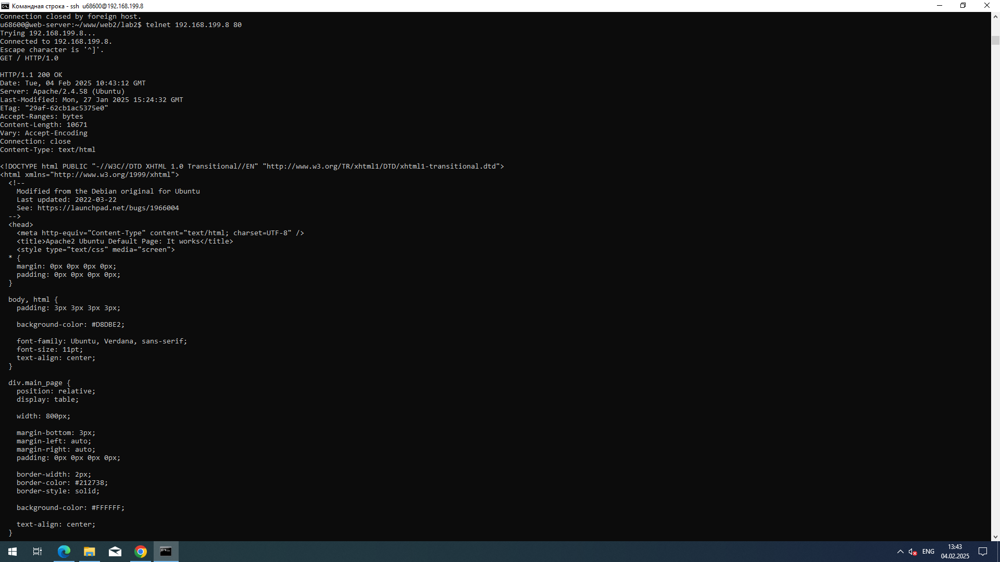
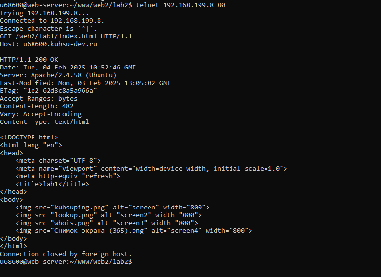
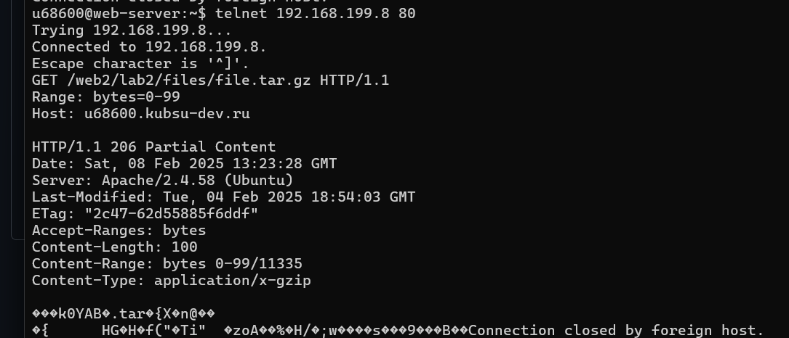

1)получить главную страницу методом GET в протоколе HTTP 1.0;

2) получить внутреннюю страницу методом GET в протоколе HTTP 1.1;

3) определить размер файла file.tar.gz, не скачивая его;
4) определить медиатип ресурса /image.png;
5) отправить комментарий на сервер по адресу /index.php;
6) получить первые 100 байт файла /file.tar.gz;

7) определить кодировку ресурса /index.php.